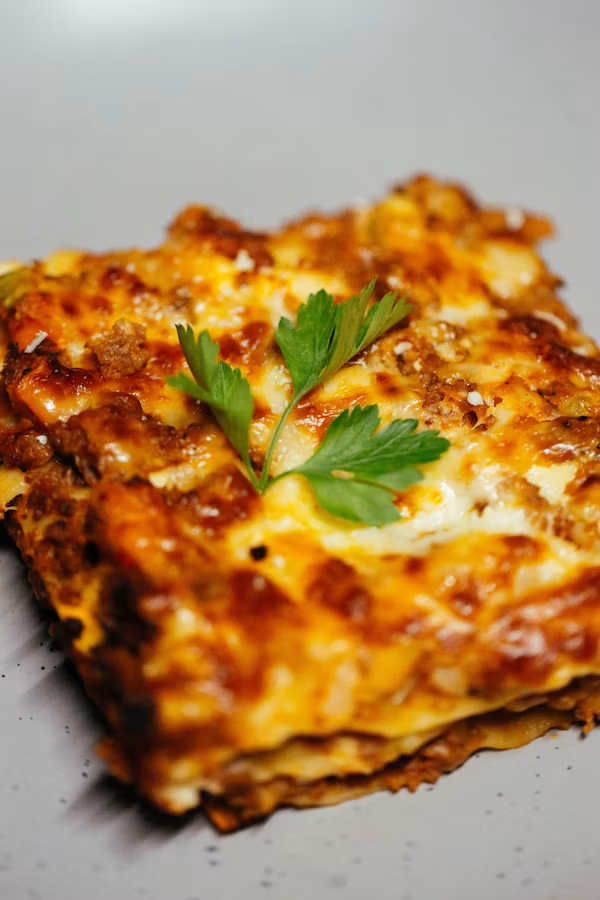

Home
Recipe for Lasagna

Description
Lasagna is a classic Italian-inspired baked pasta dish made by layering pasta sheets with a rich meat or vegetable sauce,
béchamel or ricotta cheese, and melted mozzarella and Parmesan. The layers are baked until golden and bubbly,
a hearty, flavourful meal that is perfect for family dinners, gatherings, or meal prep. Its combination of
pasta, savoury filling, and gooey cheese makes it one of the world's most popular comfort foods.
Ingredients
- Lasagna sheets (fresh or dried)
- Minced beef (or a mix of beef and pork)
- Olive oil
- Onion
- Garlic
- Tomato paste
- Crushed tomatoes or tomato sauce
- Black pepper
- Dried oregano
- Dried basil
- Ricotta cheese (or cottage cheese)
- Egg
- Parmesan cheese (grated)
- Mozzarella cheese (shredded)
- Extra mozzarella cheese
- Extra Parmesan cheese
Procedures
-
Prepare the meat sauce
- Heat olive oil in a large pan over medium heat.
- Sauté the chopped onion and garlic until softened.
- Add the minced beef and cook until browned.
- Stir in the tomato paste, crushed tomatoes, and seasonings (salt, pepper, oregano, basil, and paprika if using).
- Simmer for 20–30 minutes until the sauce thickens.
-
Prepare the cheese mixture
- In a bowl, combine the ricotta cheese, egg, grated Parmesan, and chopped parsley (if using).
- Mix until smooth and well combined.
-
Prepare the lasagna sheets
- If using regular dried lasagna sheets, cook them according to the package instructions and drain.
- If using oven-ready sheets, they can be used directly.
-
Assemble the lasagna
- Spread a thin layer of meat sauce on the bottom of a baking dish.
- Add a layer of lasagna sheets.
- Spread a layer of the cheese mixture or béchamel sauce.
- Sprinkle with mozzarella cheese.
- Repeat the layers until all the ingredients are used, finishing with meat sauce and a generous topping of mozzarella and Parmesan cheese.
-
Rest before serving
- Allow the lasagna to rest for 10–15 minutes after removing it from the oven.
- This helps the layers set and makes it easier to slice.
-
Serve
- Garnish with fresh basil or parsley if desired.
- Serve warm on its own or with garlic bread, a fresh salad, or steamed vegetables.